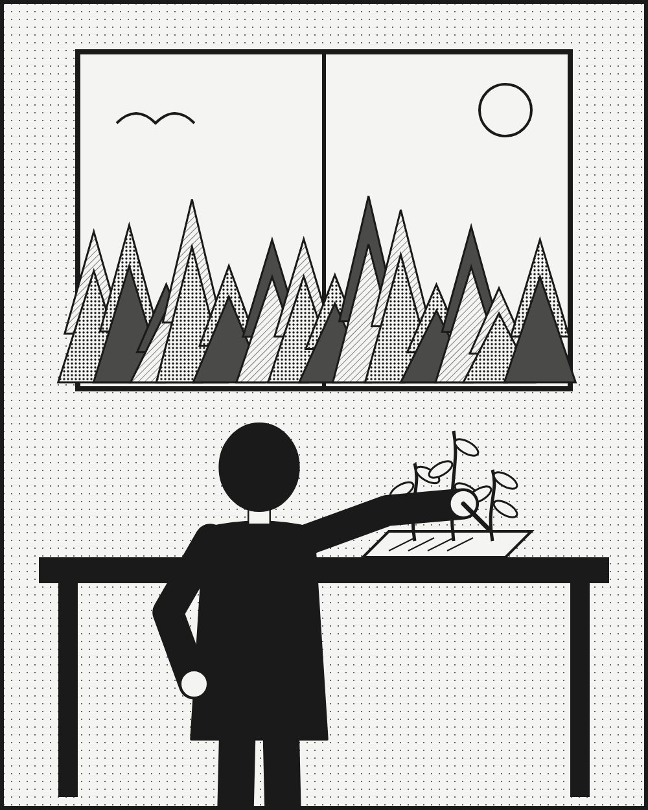

광고·마케팅 업계 뉴스 · 발행인 금로동 기자
'우리 강산 푸르게 푸르게', 숲을 키운 한 줄의 주인

독자 여러분, 오늘은 다섯 단어로 40년 넘게 숲을 가꾼 광고인을 소개합니다. 지난해 12월 세상을 떠난 김석년 전 오리콤 사장입니다. 그는 유한킴벌리의 공익 캠페인 '우리 강산 푸르게 푸르게'의 카피를 만든 사람으로 기억됩니다. 1984년 시작된 이 캠페인은 한 번의 광고로 끝나지 않고 실제 나무 심기와 숲 가꾸기로 이어졌고, 그렇게 가꾼 숲이 여의도의 56배 크기라는 기록까지 남겼습니다. 그는 광고회사 경영자로, 또 한국광고총연합회 회장으로 업계를 이끌기도 했습니다. 광고 전문지 칼럼에서는 '적절한 단어, 생생한 어휘'를 이야기했지요. 쉬운 말을 반복해 리듬을 만들고, 그 리듬이 행동이 되게 한 카피. 오늘 슬로건을 쓰는 분들께 이보다 좋은 교본이 있을까요.